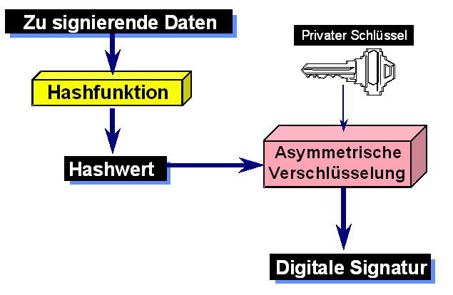

Die digitale Signatur entspricht einer handschriftlichen Unterschrift für Dokumente, die in digitaler Form vorliegen.
Sie erfüllt hohe Sicherheitsanforderungen bezüglich der Anforderungen Authentizität, Integrität und Verbindlichkeit. In vielen Ländern (z.B. Europäische Union) ist die elektronische Unterschrift auch rechtlich der Unterschrift von Hand gleichgestellt (abhängig von verschiedenen Voraussetzungen). Nähere Informationen dazu finden Sie im CT-Buch.
Zur Erzeugung einer elektronischen Signatur braucht man:
Die RSA-Signaturdemo visualisiert den Ablauf der Erzeugung einer digitalen Signatur aus allen zugehörigen Komponenten mit Hilfe eines interaktiven Flussdiagramms. Der Ablauf der Signaturerzeugung, mit Hilfe der Werkzeuge RSA-Verfahren und Hashwert-Berechnung, wird so transparent dargestellt.

Weitere Details zum RSA-Verfahren können Sie im Dialog für das RSA-Kryptosystem erfahren.